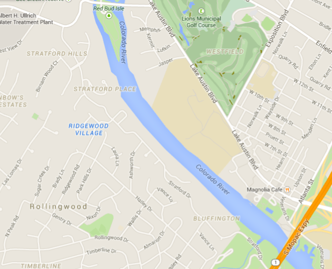

Texas Crew presents Red Bud Roundup
Frequently Asked Questions
The event will be taking place on March 28, 2015 from 9:00am - 1:00pm. All crews will be launching from Texas Rowing Center:
1541 W Cesar Chavez St
Austin, TX 78703
What is the race course?The start line is located near the Red Bud Isle, and the finish line will be just before the Mopac bridge. Please look below for an aerial view. 
How long is the course?
The course is a 2k.
Who is competing?
The following crews will be attending:
Yes. All teams are betting shirts. The winners of each race take home all the glory and a new wardrobe.
Have any questions?
Feel free to contact our president at keunwoolee@utexas.edu